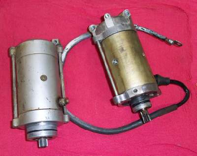
¶
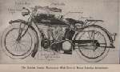
I started riding in 1965. Most of the bikes then used kick starters. Not all, in fact there have been electric starters from way back. I have a book dated 1915 that shows an Indian motorcycle with an electric starter. It's just that they were not real popular. All the movies back then had the big, bad, nasty, bad guy, motorcyclists run out to their bikes and kick start them. Now they run out and push a button... It's just not the same.Anyway, around 1968 Honda brought out the CB350 twin. I was working in a Honda shop at the time. All the New Honda 350 owners would kick start their bikes. As it turned out, Honda had wanted them to use the electric starter and thought everyone would, but they didn't ! Some of the internal kick starter parts were made too weak and broke from so much use. We did a lot of warranty work on those 350s but, from that time on, the "Button" really took off.
It seems everyone liked pushing that button. In fact, kick starters are slowly disappearing, except, maybe, for dirt bikes. I don't particularly like this trend. Every battery I've ever owned has, sooner or later, failed. That's the nature of the beast. It may take years but sooner or later it will fail. It would be nice to have a backup but, I guess we just will have to live with no kick starters.
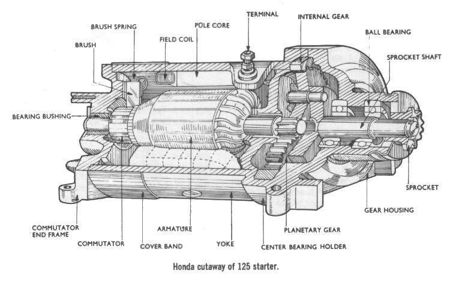
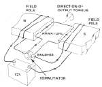
A few years ago a guy came in with a XR350. It has a hot cam in it, high compression piston, was bored to 400 or so ccs and had a monster carb. It was in an absolutely beautiful, silver plated Reynolds frame. At one time it was a real state of the art motocrosser. The guy seemed to think there was something goofy with the carb, but I could find nothing wrong. He claimed it used to start easy but now it was hard. I weigh over 200 pounds and I'm used to kick starting big bikes. I could get it started... barely ! The owner weighed about 110 pounds and could barely turn the engine over. A little button to push would sure have been nice.
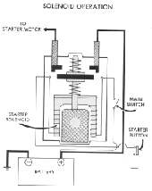 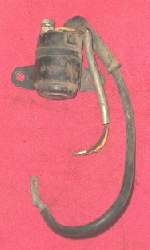
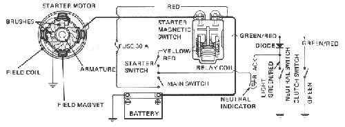
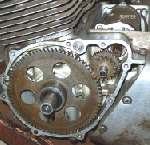 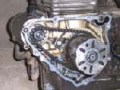
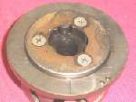 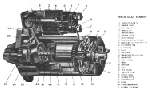
The starter clutch uses steel balls or rollers that lock the crank shaft to the starter gears when turned in one direction and freewheel when turned in the opposite direction. This allows the starter to lock up solid when starting the engine, and then to release when the engine starts. Most of the Japanese bikes use this method. The pivot and solenoid method uses the solenoid to put power to the starter motor and, at the same time, lever the starter nose gear into the clutch or flywheel gears. Harley Davidsons use this method as do a lot of European makes and almost all cars. There is a third way, but I have not seen it used on motorcycles. This method uses big, wide, thread like channels cut in the end of the armature. The starter gear rides, up and down, in these channels. Because of the angle of these channels, the starter gear is thrown out to the end of the armature when the starter turns. It then engages a big ring gear, usually on the flywheel, to start the engine. When the starter stops, a spring pushes the starter gears back out of engagement. I haven't seen this type of starter used much on motorcycles. I do see it used a lot on lawn tractors and lawn mowers.
If you bike won't start the first thing to check is the battery. Is it in good condition and fully charged? See the Battery Page. If the battery tests good and the solenoid clicks at you, the solenoid might be corroded inside. To check, bypass the it. A real down and dirty way is to just connect the two big posts on the solenoid with a (OLD) screwdriver. There will be lots of sparks so have a good Fire Extinguisher handy. If nothing happens when you do this, the starter wires are broken or corroded, the starter is dead, or the starter is not grounded right. Try bypassing the everything. Hook a heavy jumper cable straight from the battery to the starter. If nothing happens, most likely the starters dead. You can also run a voltage drop test, to test the starter cables. See the Electrical tests page.
If the starter works when you jumper the two terminals then you need a new solenoid. If the starter works and the solenoid does not click, the solenoid might be dead or it might be that the starter button is corroded and not making good ground or the wire going to the button may be broken. Sometimes there is a fuse in the starter system, be sure to check it. Also, on new bikes, big brother has now put in all kinds of "Safety" switches to protect us from ourselves. I don't particularly like them, however, I do have at least one rather vivid memory of trying to turn left with the side stand of my Norton down. Anyway, check all those switches before you go and replace starters, solenoids, etc. They are usually on the clutch lever, side stand, and neutral switch. Older bikes don't have these "Helper" switches so their wiring is a bit simpler.
Starters are usually held on with two bolts. Remove those two bolts, give a pull and out it comes. Most of them have a rubber O-ring seal to keep the oil in. so it may take a bit of a pull to get them off. Be sure and check in the shop manual to see if you have a chain drive type. If you pull the starter on them, the sprocket and chain will fall down in the side cover. You must remove the side cover to get the chain and sprocket back on.
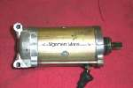
As you take it apart look for:
- Oil, water, or rust in the starter. If there is, clean it up and replace all the seals, o-rings and Gaskets.
- Wires not connected right or not connected securely.
- Carbon dust or dirt from the brushes short circuiting things.
- Armature is not concentric.
- Brushes too short.
- A rough or dirty Commutator.
- Is the Mica gap, between the segments (Bars) of the Armature, filled with carbon?
- Is the spring for the carbon brush weak and not pushing the brush against the Armature? You can check this with a spring balance. Normal pressure is about 500 grams or 1 pound, give or take, up or down, more or less, kinda sorta.

Now I could go into turning the commutator (In a lathe) and undercutting the Mica gap (Hack saw blades work good, go down about 0.3mm or .012", and chamfer the edges a bit so the brushes don't get damaged.) but unless you are rebuilding lots of starters, you just will not need to do this. Here are some things to consider. Starters today are made of good quality materials and are quite reliable. If treated right they will last a long time. In times past, materials where not quite as good and the motorcycle was looked upon as a legitimate form of everyday transportation. Today that's no longer true. What do I mean? Well, in the old days Bikes where use as regular transportation. They were run every day. If you had an electric starter, it would have been made out of the best materials available and you would be using it a lot. Trouble is, those materials where not as good as we have today.
Normal wear would have occurred more rapidly then would happen today. This would have necessitated the truing up of an out of round commutator, cutting the Mica gap, etc. Today, we ride our bikes a bit when the good weather hits and then stick them in a corner and forget about them. When we do go to start them, the carbs are all gummed up and we crank and crank and crank that puppy and it still won't start. All this cranking tends to burn out the coils in the starter before there is a lot of wear on the Armature. Our starters, today, wear out from rust and abuse. Not from good, honest wear. So what does all that mean? Simply this. If your starter goes on the blink, check the cables, solenoid, take it apart, clean the rust out, but odds are a new set of brushes is not going to fix it. If, with a good battery, it will just barely turn the engine over, you probably need a new or rebuilt starter... and they're not cheap. To top it off, a lot of motorcycle manufacturers don't sell the armatures or the field coils separately.
Check the continuity between all of the commutator segments. There should be continuity. If one pair gives a high reading (No continuity) there may be an open circuit. Now check for continuity between the segments and the armature shaft. There should be none. In the old days, they had a tool called a "Growler" to test the armatures, but again, if your not doing a lot of them, it's not much use to have one. If the commutator looks a bit dull or burned, it won't hurt to shine it up a bit with a fine grade of sand paper. They say don't use Emory paper. There is a chance the hard particles will become embedded in the surface of the commutator and wear the brushes out (Like sand paper has no hard particles?). However, I'm sitting here looking at three different starter manuals and one says use Emory paper (Chilton), one says don't, use sandpaper instead (Haynes) and one says don't use any (Honda Factory). Instead use a file. Me? I usually use sandpaper. It's cheaper, but if the truth be known, I really use whatever fine paper my hand hits first when I reach inside my sandpaper storage box. However, the file thing sounds even cheaper, provided you don't file any flat spots on the commutator. Take your pick, I really don't think it matters which method you use.
Check for continuity between the starter cable or terminal bolt, on the side of the starter, and the brush that is wired to the end of the stator coil, also called field or pole coil. That is the coil(s) bolted to the yoke or starter body. If there is no continuity, the wire is shorted and the coil needs to be replaced.
Most starter motors have four poles (field coils) and four brushes. Some have only two brushes, but that really loads the brushes heavily. Some sparking, while running, at the brushes, is normal. Heavy sparking should be looked into.

Starter brushes need to be measured and compared with the minimum measurement given in the shop manual. If you don't have this spec, just look art them. If they "Seem" too short, be they probably are ! If they "Seem" long enough and there is good spring pressure, pushing them against the commutator, they should be OK. If you can't get the right replacement brush, try to find ones that are a about the right size, only bigger, and file them down. Carbons carbon so they should work OK. The important thing is that the carbon brushes press tightly against the commutator. If they don't, the current will not pass through them properly.
Don't run the starter, on the bench, more then a second or two without a load on it. They can really rev up and they are not designed to run at high speeds.
Don't ever run an electric starter, under load, for a long period of time. Run them no longer then five or ten seconds. They heat up and can burn out one of their coils. Run it for five seconds and then stop and wait for one minute before running it again. This lets the starter cool down. If it won't start, find out why. Don't just keep cranking it.
Lastly, a starter can be used as a generator too. Push current through it in one direction and it's a starter, spin it and it's a generator. Yamaha, Suzuki and others used them, not to mention that 1915 Indian. Yamaha used a lot of those on their AT1 125cc dirt bikes with electric start. They were made back in the 1970s but I'm still seeing them, even now in 2004. The page that covers them is Here. I've seen them on Suzuki's too, and read about Kawasaki's having them, so you just might run into them.
Here are some exploded starter views for you to study.
Double lastly, here are some thoughts on the old Yamaha Virago starter problem.

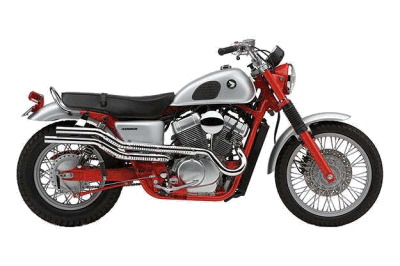 |
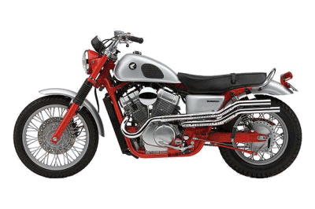 |
Copyright © 1999-2004 dansmc.com. All rights reserved.